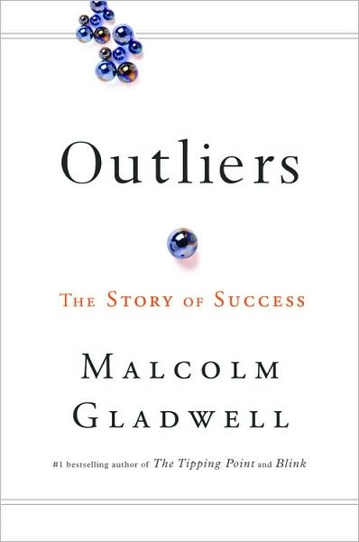
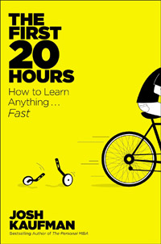

Coding for Digital Professionals
... a one-day, hands-on training session on how web technology works for non-technical business professionals who manage web sites or web teams
... a one-day, hands-on training session on how web technology works for non-technical business professionals who manage web sites or web teams
Malcolm Gladwell introduced us to the 10,000-hour rule in his book Outliers. To be a world-beating expert you need to put in 10,000 hours of practice.
Josh Kaufman, however, pointed out that just 20 hours of focused, deliberate practice can take anyone from complete beginner to a basic level of skill in any discipline.
We will go through the basics. We will try to de-mystify coding and provide a toolkit to enable analysis, exploration and experimentation with the code behind web pages. There isn't, however, enough time for you to practice sufficiently to acquire basic web skills. To do so, I suggest you try to set aside a further couple of days (or an hour a day for a week) to practice working with HTML, CSS and Javascript.
...
From Josh Kaufman, The First 20 Hours, Chapter 2
...